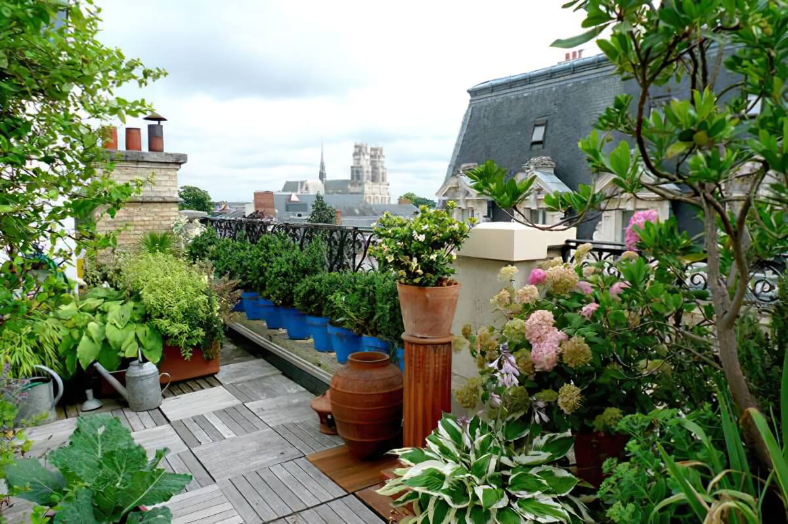
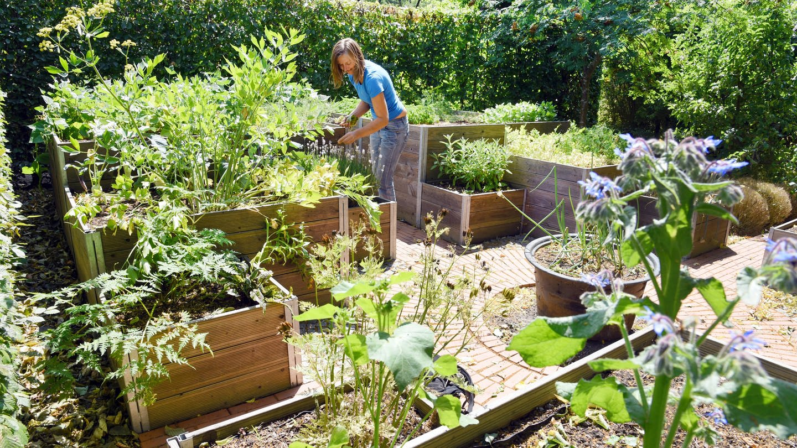
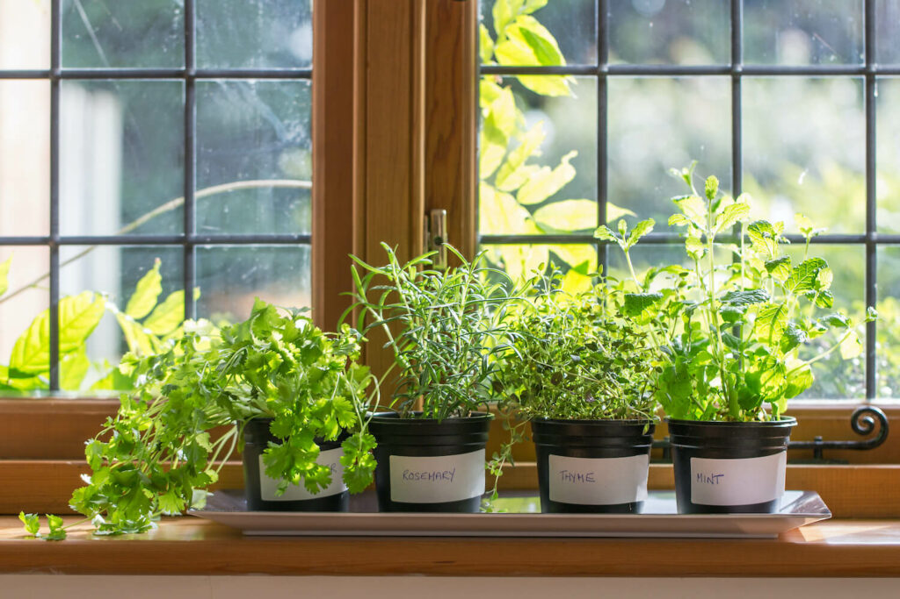
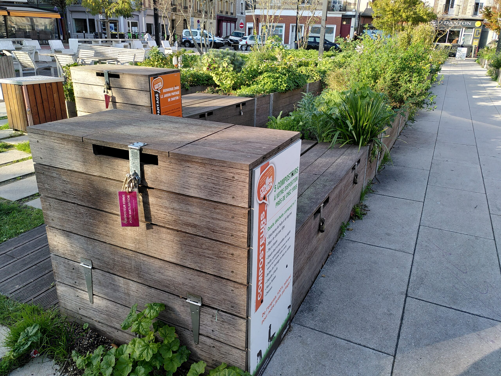
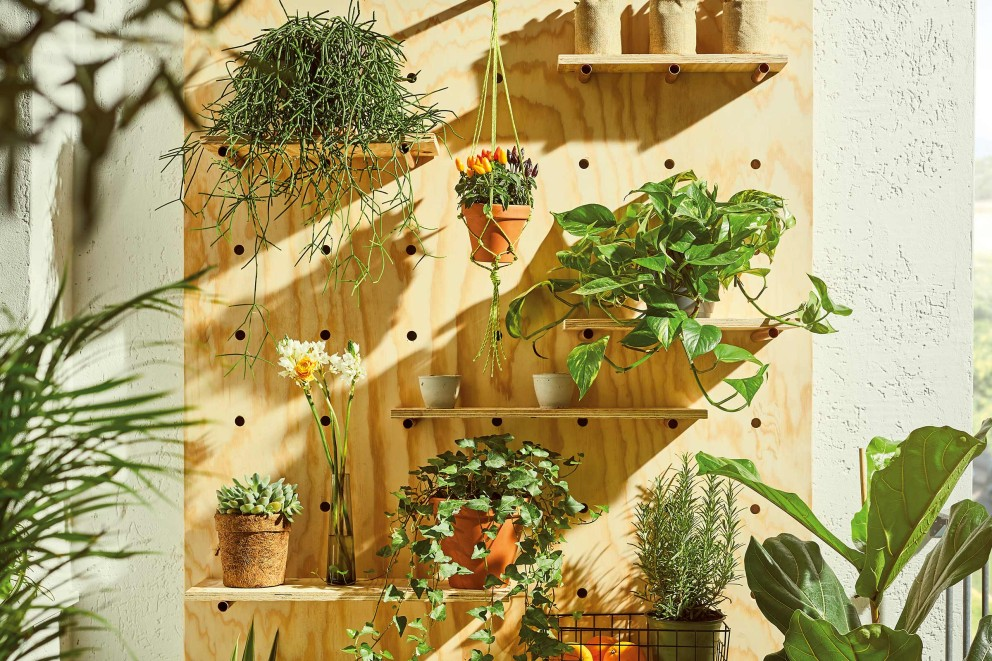

Urban Gardening: Gärtnern in der Stadt – so geht's!
Keine Kohle für 'nen Garten? Kein Problem! Urban Gardening ist der heiße Scheiß für alle, die in der Stadt wohnen und trotzdem Bock auf frische Lebensmittel und grüne Oasen haben. Egal ob du 'nen Balkon, 'ne Fensterbank oder nur 'nen kleinen Hinterhof hast – hier kommen die besten Tipps, wie du zum City-Gärtner wirst! 😎
Gärtnern auf dem Balkon: Von Mini-Tomaten bis zum Kräuterparadies!
Dein Balkon ist mehr als nur ein Ort zum Chillen. Verwandle ihn in einen grünen Dschungel! Mit Töpfen, Hängeampeln und vertikalen Gärten kannst du den Platz optimal nutzen und deine eigenen Tomaten, Erdbeeren oder Kräuter anbauen. So hast du immer frische Zutaten für deine Lieblingsgerichte!
Hochbeete im Gemeinschaftsgarten: Zusammen gärtnern macht mehr Spaß!
Gemeinschaftsgärten sind der Place to be für alle Urban Gardener! Hier triffst du Gleichgesinnte, kannst dich austauschen und gemeinsam gärtnern. Hochbeete sind ideal, weil du dich nicht so bücken musst und sie super produktiv sind. Gemeinsam anbauen, ernten und genießen – was gibt's Besseres?
Kräutergarten auf der Fensterbank: Frische Kräuter immer griffbereit!
Du hast keinen Garten? Kein Ding! Ein Kräutergarten auf der Fensterbank ist die perfekte Lösung für alle, die auf frische Kräuter stehen. Basilikum, Petersilie, Schnittlauch – alles, was dein Herz begehrt, kannst du in kleinen Töpfen anbauen. So sparst du Geld und hast immer aromatische Kräuter für deine Gerichte.
Kompostieren in der Stadt: Abfall? Nein danke! Dünger? Her damit!
Kompostieren ist nicht nur was für Ökos! Auch in der Stadt kannst du deine Küchenabfälle in wertvollen Dünger verwandeln. Mit einem Komposter auf dem Balkon oder im Hinterhof sparst du Müllgebühren und tust der Umwelt etwas Gutes. Dein Gemüse wird es dir danken!
Vertikaler Garten: Gärtnern in die Höhe – für alle, die wenig Platz haben!
Wenn der Platz knapp ist, musst du kreativ werden! Vertikale Gärten sind die perfekte Lösung, um auch an Wänden oder Zäunen Gemüse und Kräuter anzubauen. Sieht cool aus und spart Platz! So wird deine Wohnung zum grünen Paradies.
Urban Gardening ist die Zukunft! Also, worauf wartest du noch? Schnapp dir deine Gartengeräte und leg los! Deine Stadt wird's dir danken! 😉